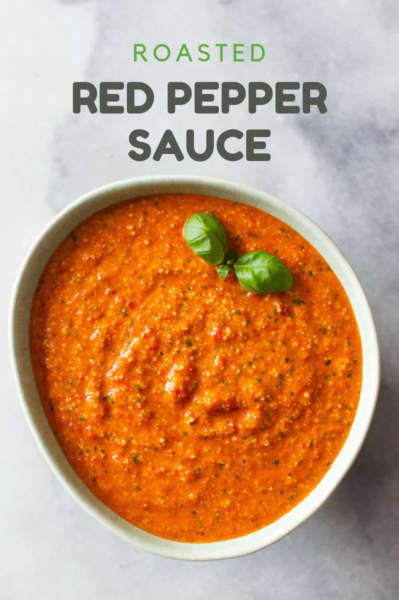

Roasted Red Pepper Sauce

This simple but delicious sauce will last for two weeks in your refrigerator. Make a big batch to use as a topping for breakfasts, lunches, and dinners.
Need to make dinner in a hurry? Use jarred roasted red peppers! So that you don’t water down your sauce, be sure to drain as much of the liquid from the jar as possible.
If you enjoy making things from scratch, you can make roasted red peppers yourself. It can be done under a broiler, over a gas flame burner, or even on a grill.
Ingredients
- 3 large roasted red peppers
- 1/2-1 cup freshly grated Parmesan
- 1 cup fresh basil leaves
- 2 cloves garlic
- sea salt
- 1/2 lemon (juice of)
- 1/2 cup olive oil
Steps
- Add all ingredients to a food processor and process until smooth
- Pour into serving bowl and serve imeadiately